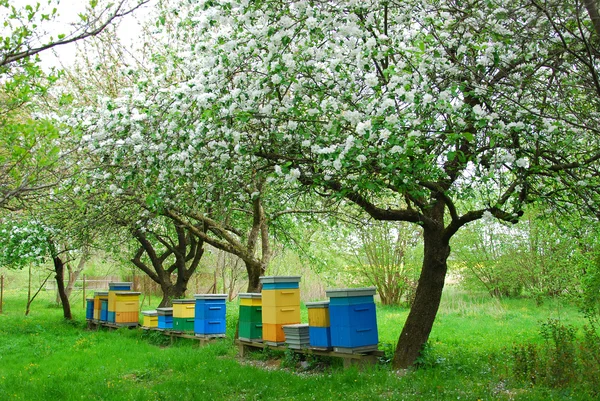
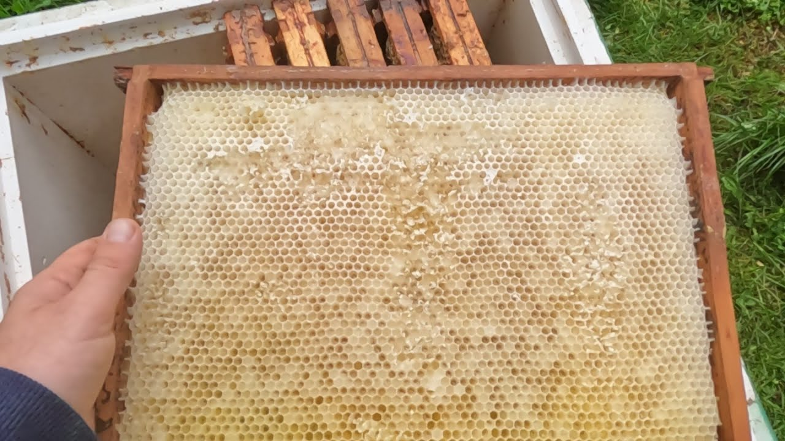
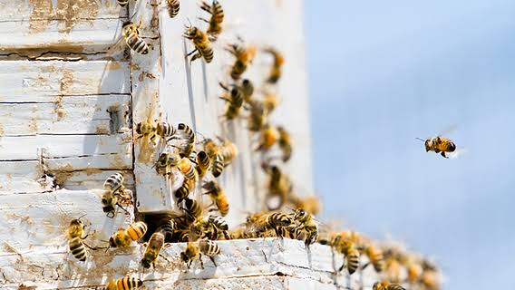
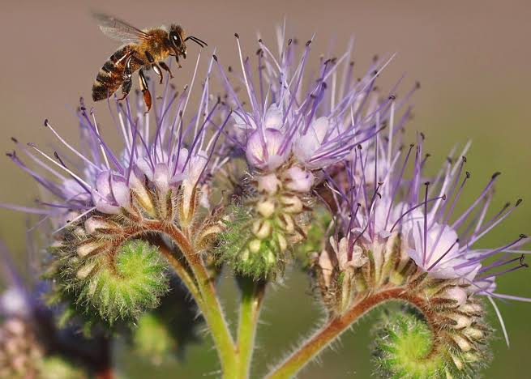
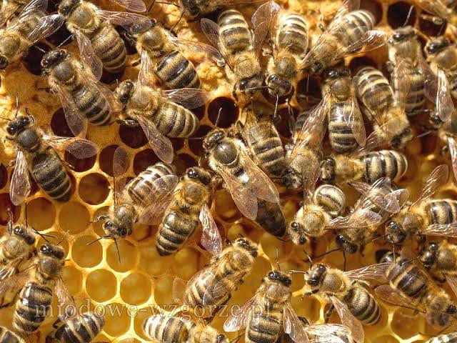
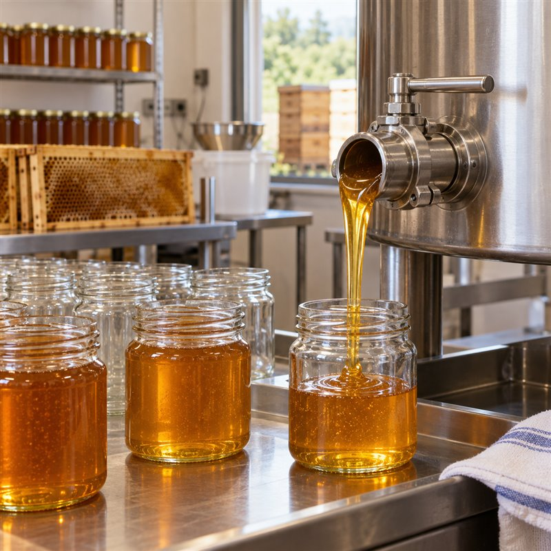
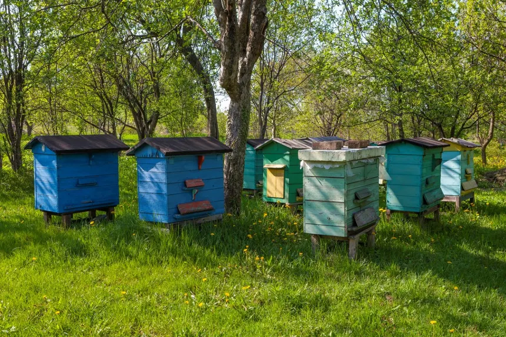
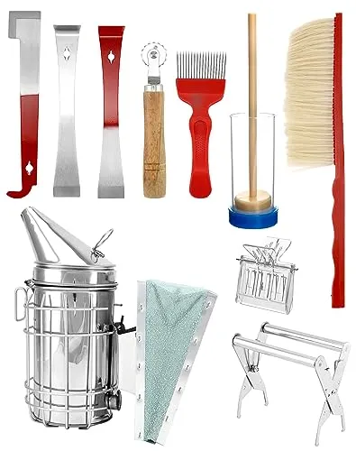
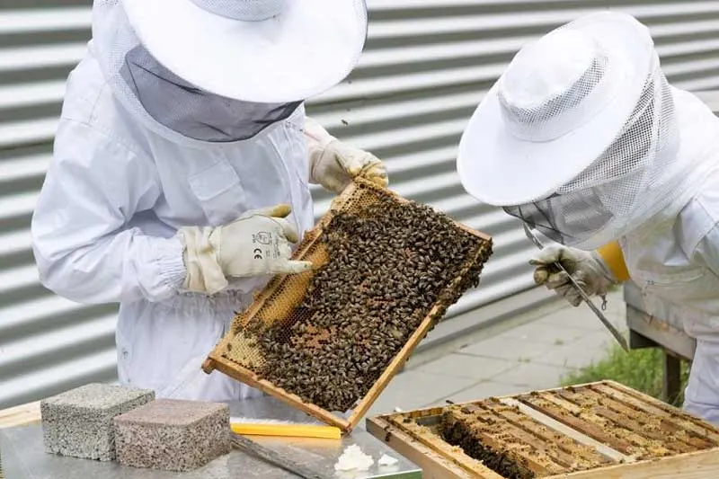

🐝 Hodowla i Pasieka
Praktyczny przewodnik początkującego pszczelarza
Praktyczny przewodnik początkującego pszczelarza
Współczesne pszczelarstwo to nie tylko pozyskiwanie miodu, ale przede wszystkim odpowiedzialna opieka nad rodzinami pszczelimi, dbanie o ich zdrowie, higienę uli oraz zapewnienie zróżnicowanej bazy pożytkowej w najbliższym otoczeniu.
Najedź kursorem na galerię, aby wstrzymać animację, lub skorzystaj z przycisków przewijania:







Gdzie postawić ule?
Wybierz miejsce zaciszne, osłonięte od północnych wiatrów i lekko nasłonecznione (najlepiej z porannym słońcem i popołudniowym półcieniem). Wylotki uli ustawia się zwykle w kierunku południowo-wschodnim.

Niezbędne narzędzia
Na początek wystarczą: kapelusz z siatką lub bluza pszczelarska, dłuto pasieczne do rozdzielania ramek, podkurzacz uspokajający owady, zmiotka do delikatnego usuwania pszczół z plastrów oraz rękawice.

Skąd wziąć pszczoły?
Najbezpieczniej rozpocząć od 2–3 odkładów kupionych w maju lub czerwcu ze sprawdzonej, zdrowej pasieki hodowlanej. Łagodne linie pszczoły kraińskiej doskonale nadają się do nauki pierwszych przeglądów.
Pierwszy oblot oczyszczający, ocena zapasów pokarmu, poszerzanie gniazda węzą oraz kontrola rozwoju czerwiu.
Zapobieganie rójce, nakładanie korpusów miodni, miodobrania (rzepak, akacja, lipa) i przygotowanie do leczenia warrozy.
Układanie gniazd do zimowli, zakarmianie rodzin syropem cukrowym lub inwertem oraz zabezpieczenie wylotków przed gryzoniami.
Spokój w pasiece, okazjonalne osłuchiwanie uli, czyszczenie sprzętu, drutowanie nowych ramek i planowanie kolejnego sezonu.